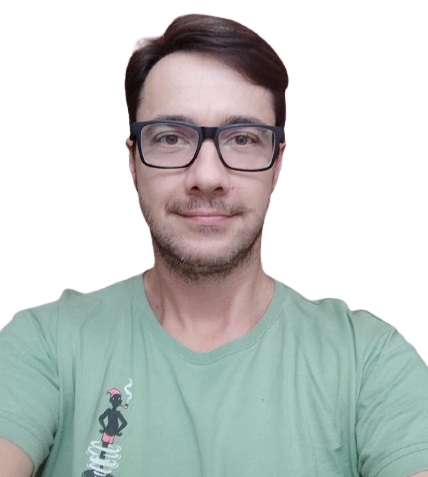

Portfólio
Informações pessoais
Nome: Eduardo Ciepanski Vieira
Nascido em: 04 de Novembro de 1981
Formação: Superior em Análise e Desenvolvimento de Sistemas
Contato (email): eduardo.cvieira@hotmail.com
Linkedin: https://www.linkedin.com/in/eduardo-ciepanski-vieira/
Experiência Profissional:
- [06/2009 – atualmente] – Specto Tecnologia (São José SC)
- [09/2000 – 10/2008] – Enigma Informática (Pelotas RS)
- [02/1999 – 07/2000] – Abacus Informática (Pelotas RS)
- [01/1998 – 01/1999] – Enil Informática (Pelotas RS)
Principais atividades: Gestão e operação de projetos de atualização, manutenção e implantação de equipamentos eletrônicos e sistemas(em pequenas, médias e grandes empresas/corporações), suporte ao cliente e a rede técnica, treinamento técnico e operacional (clientes e equipes de diversos setores da empresa), apresentação de soluções, coordenação das manutenções em laboratório e serviços técnicos, análise e levantamentos de requisitos, apoio ao comercial e ao desenvolvimento.
Cargo: Empresário
Cargo: Técnico em suporte de informática
Cargo: Técnico em manutenção e montagem de computadores
Alguns Cursos:
- Técnico em Processamento de Dados – Colégio Santa Margarida – Pelotas RS, concluído em 1999 (3 anos) mais estágio obrigatório (6 meses);
- Técnico em Informática – SENAI São José, concluído em 2015 (2 anos);
- Análise em Desenvolvimento de Sistemas - UNOPAR Florianópolis, concluído em 2020 (3 anos).
- Língua Inglesa - INFLUX, concluído em 2021 (2 anos e meio).
- Liguagem LUA - CPDI, conclusão em Novembro de 2023 (6 meses).